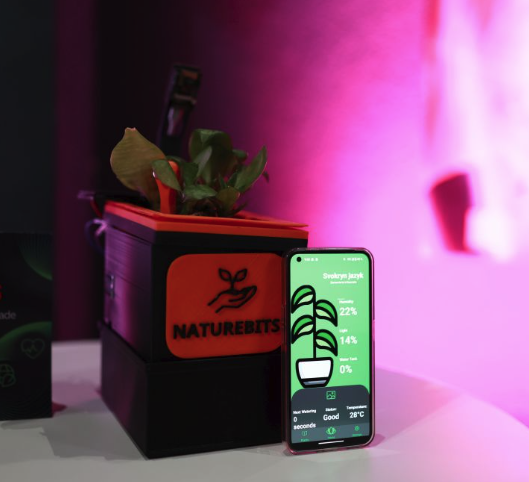

Michal Mucha
I build software end to end. From the sensor on the device to the cloud behind it.
Curious by default. I've been writing code since I was 15, and I still reach for a new problem the way other people reach for a puzzle.
Right now I'm studying Software Engineering at Saxion University in the Netherlands, and I spend most of my time turning ideas into working software.
Things I've built & where I've worked
The path so far
-
Now
Fullstack developer
Instance Studio, while studying at Saxion University
Where I am now. I build applications end to end and gain real experience while I finish my Software Engineering degree.
-
Before that
From frontend to fullstack
Bootiq, a software studio
I started on the frontend and grew into the whole stack. The interfaces, the APIs, and the logic that ties them together.
-
2022 / 23, age 17

LeafLoop
A student project that took first place at Enter Programiada, Telekom's national coding competition.
A 3D printed smart flowerpot I called Leafpot. Its sensors read the plant and stream humidity, light and temperature into my own REST API and database. On top of that sits a plant encyclopedia, answered by an AI model I trained myself. It won first place in the country.
On GitHub
Side quests
What I build when there are no bigger problems to solve.
-
Go, live project
zipp
My biggest side project. A backup manager with scheduling and snapshots, running in the open at zipp.rest.
-
JavaScript
Comet
An app I have been building on the side.
-
macOS app
poof
One click and your apps are gone, except the ones you choose to keep. A quick macOS cleanup tool.
-
VS Code extension
bem-scss-nav
Ctrl and click a BEM class in your markup to jump straight to its SCSS definition.
-
C++, embedded
Space Station Meltdown
An embedded programming escape room running on a Nucleo board.
What I do
From the first sketch to the last deploy.
I like owning the whole thing: planning, wireframing, building and shipping. An idea on a whiteboard turned into an app running in production.
- JavaScript
- TypeScript
- Next.js
- Java
- Python
- Databases
- Docker
- AWS
- Linux
- Networking
Beyond the code
Who am I as a person?
Mensa member. My superpower is learning new things fast.
I think critically, I'm curious by default, and I like the problems that don't have an obvious answer yet.
Michal is a fast learner, able to pick up new tools and frameworks with remarkable speed and precision. However challenging the task, he stays focused on delivering value.
Let's build something.
This is the footer. I kind of ran out of ideas down here :)